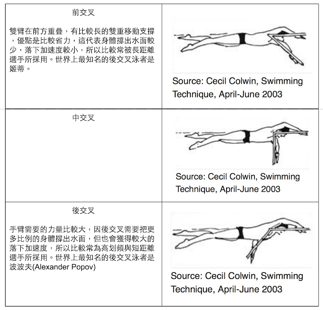

← 回部落格
游泳課逐字稿 06：前交叉、中交叉與後交叉的分別與自由式打水的目的
內容提供／徐國峰．逐字稿繕打／范寶蓮
前一篇：划手的時機呢？什麼時候支撐，什麼時候向前落下？
前交叉的游法，支撐手所需負荷的體重較小；後交叉所預負荷的體重較大，但相對來說，後交叉可以把身體抬出更高水面，創造更大向前落下的加速度。這也是為什麼短距離泳者都會採用後交叉。

自由式打水的目的？
學員：「老師你講到這邊，都沒提到腳的打水。」
國峰：「就自由式的打水而言，它是在幫助你的體重快一點轉移過去。因為當我們的支撐點入水點在前面的時候，我們透過這個方式，雖然可以把重心轉移過去，但我們也需要後面的體重跟上來，跟上來到支撐點的前面，我才有辦法讓體重快一點落下。那個畫面就好像我的身體在水面上有兩節的火車，前面有一個支撐點，上半身的體重落下後，下半身的體重雖然有水撐著，但也必須快點跟上去，要不然會被拖到向前落下的速度。所以打水只是讓體重跟上去而已。除此之外，自由式打水的功能還有下列三種目的：幫助平衡、維持流體力學上的效益、作為浮力支撐。其中以「平衡」最為重要。
- 第一個目的是保持平衡，我在轉換體重的時候，我的下半身必須是平衡的，不能扭動，因為一扭動體重就不見了。就好像跑步的時候間不能晃動，一晃動體重就不見了你就沒有加速度。因此前進的動能也必須建立在身體足夠平衡的基礎下。所以，在游自由式時即使雙腿本身不用特別提供推進力，我們還是要花力氣控制雙腳的動作以維持全身的平衡，才能使體重在兩側臀部間流暢地轉移。經典的「二打法」似乎最能說明打水的平衡功能，從外人來看二打法的泳者好像是手划一次、腳踢一次，而且看起來在推水時同側的腳也用力在向下打水。但這只是看起來。事實上，雙腳只是跟著臀部輕微的旋轉。前面我們已經說過，轉肩與轉臀都是為了把體重壓在移動支撐上，為了維持身體的平衡，雙腳就必須輪流做反方向的擺動，就像跑步時手臂的功能一樣。因此雙腿的任務不是主動打水，它們只要小心地控制擺動的範圍就好，擺動範圍要小才能加快體重轉移。
- 第二個目的是維持低水阻的「流線型」姿勢，它跟平衡一樣重要，而且兩者間的關係密切。泳者的阻水面積愈小，就愈能夠有效提升速度。在水中，若泳者打水太深太用力，等於是在身後挖一個大洞來拖住身體前進。單從這個理由來看，我們就應該盡量縮小打水的幅度。當你打水得愈深愈用力，你就浪費愈多的能量，也會增加你快速穿過水中的難度。所以，當你的臀部轉動時，你要一直注意把雙腳維持在一個非常小的「圈圈」裡。而且，腳背要打直，腳尖始終指向身體後方。身後任何物體都會增加你前進的阻力，也就是說身體末端的流線型將影響你的最大游速。當雨水從天而降時，前端是圓形的，但末端呈細尖狀，你的腳掌也應該一樣，這是一個既簡單又明白的道理。如果你沒有控制好下半身，腳尖朝下或雙腳打水的圈圈太大，雙腳就會拖到前進的速度。說具體一點：自由式打水是讓你的下半身起來。就好比在游抬頭捷，提臂頭又抬高，很多人腳會沉下去，一沉下去體重就空了，所以我必須讓下半身抬起來，體重才會在手掌上。這是關鍵，因為支撐手上有體重才有辦法加速。
- 第三個目的是浮力支撐。雙腿是軀幹與臀部的延伸，所以最後一項功能跟軀幹一樣是浮力支撐。有好的浮力支撐，體重才能有效轉移到(前伸臂的)移動支撐上，所以雙腿保持在水面上就非常重要。沉到水中的雙腿不只會增加水阻，還會在划手的關鍵驅動期把手上的重量搶走。
總之，腿部的動作愈小愈好。盡量不做多餘的事。如果腿部的動作失去控制，將導致泳姿走樣，後果就是嚴重拖到前進的速度。
徐國峰・KFCS 耐力訓練系統
看更多文章 →